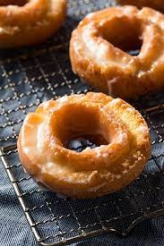

Sour cream Doughnut

Description
These donuts boast a crisp exterior and a moist, tender, cakey interior all enrobed in a classic, creamy glaze. The sour cream contributes moisture and texture but the donuts themselves are not tangy at all.
Ingredients
- Baking powder
- Kosher salt
- Sugar
- Nutmeg powder
Steps
- Whisk together flour, baking powder, salt, nutmeg, and cinnamon in a bowl until well combined.
- Cover, and chill in the refrigerator until dough is cold and just slightly firmed, about 2 hours.
- Turn dough out onto a heavily-floured surface and pat or roll to 3/8- to 1/2-inch thickness, flouring hands or rolling pin as needed.
- Heat 3 inches of oil in a large Dutch oven over medium heat until a deep-fry thermometer registers 360 degrees F to 365 degrees F (182 degrees C to 185 degrees C), about 30 minutes.